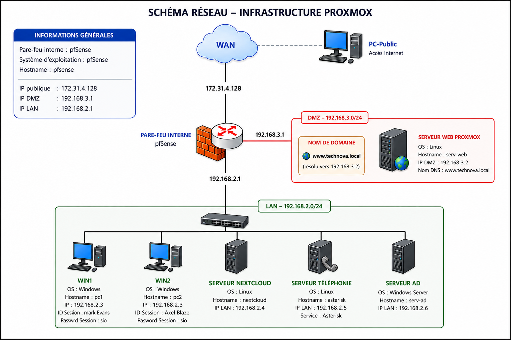

Contexte & Objectif
Technova Solutions souhaitait moderniser son infrastructure réseau afin de séparer les services internes et accessibles depuis Internet, centraliser la gestion des utilisateurs via Active Directory, et sécuriser les accès grâce à des stratégies (GPO) et une segmentation réseau (LAN / DMZ).
Schéma de l'infrastructure

Le schéma montre la segmentation WAN / LAN / DMZ, le pare-feu pfSense, et l'emplacement des différents serveurs.
Composants & Services
WinServ2025 (AD)
- IP : 192.168.2.6
- Rôles : AD DS, DNS, gestion des utilisateurs et GPO
- Domaine : www.technova.local
Nextcloud
- IP : 192.168.2.4
- Stockage centralisé et partages par groupe
- Quotas et permissions gérés via AD
Asterisk (téléphonie)
- IP : 192.168.2.5
- Comptes SIP et appels internes
- Softphones : 3CX-phone
Serveur web (Proxmox)
- IP : 192.168.3.2
- Hébergé sur Proxmox en DMZ
- Accès public via WAN NAT
Poste Windows
- IP : 192.168.2.10
- Poste de travail pour administration et utilisateurs
- Connexion au domaine et aux ressources partagées
pfSense
- WAN : 172.31.4.128
- LAN : 192.168.2.1
- DMZ : 192.168.3.1
- Filtrage, NAT, segmentation et règles d'accès
Gestion utilisateurs & GPO
Groupes créés : Direction, RH, IT, Employés. GPO mises en place pour :
- Politique de mot de passe
- Verrouillage après tentatives échouées
- Restriction du panneau de configuration et de l'invite de commandes
- Déploiement automatique de lecteurs réseau par groupe
Sécurité & Partage
Les ressources partagées sont protégées par les permissions AD. Le serveur web public est isolé en DMZ pour limiter l'exposition depuis le WAN.
Automatisation
Scripts PowerShell pour automatiser la création de comptes, l'assignation des lecteurs réseau et d'autres tâches d'administration.
Conclusion
Ce projet a permis de mettre en pratique des compétences en administration Windows et Linux, configuration de pare-feu, segmentation réseau, téléphonie IP et automatisation.